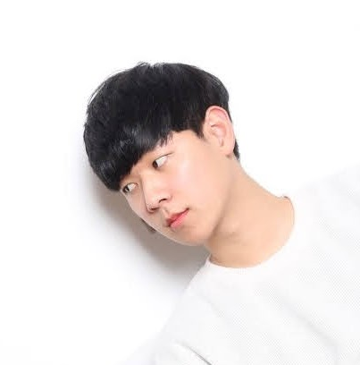
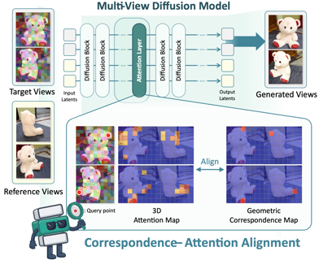
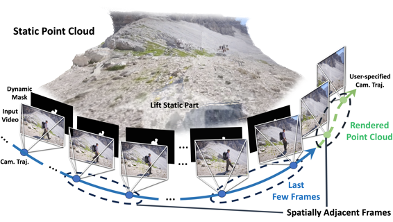
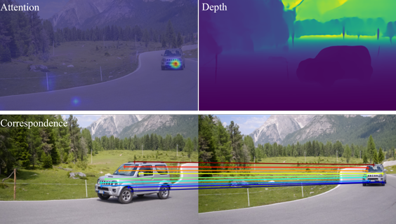
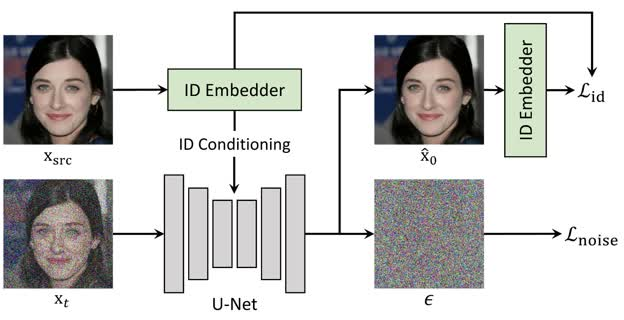
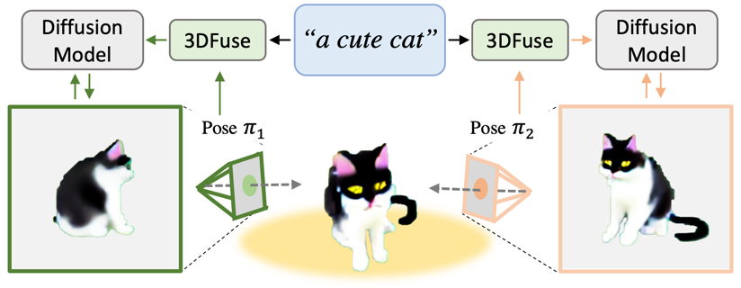
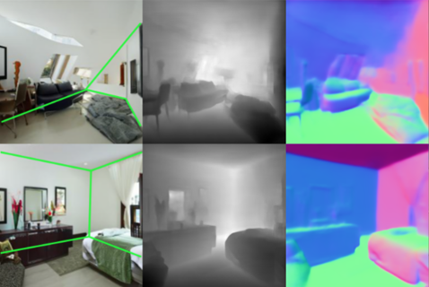
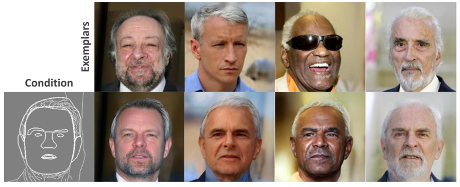
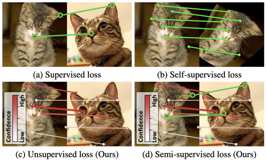

|
Junyoung Seo I'm a 5th-year Ph.D. student at KAIST AI, advised by Professor Seungryong Kim. My research focuses on machine learning and computer vision, with particular emphasis on large-scale generative models like diffusion models for video, 3D, and 4D representations. Recently, I've been focusing on world simulation models with real-world grounding, visual reasoning for enhanced visual generation, and efficient cross-caching mechanisms between large-scale and compact video models. |
 |
Work Experience |
|
|
||||
|
|
Selected PublicationsFor a complete list of publications, please refer to my Google Scholar. |
| Grounding World Simulation Models in a Real-World Metropolis | |
|
Grounding World Simulation Models in a Real-World Metropolis
Junyoung Seo*, Hyunwook Choi*, Minkyung Kwon, Jinhyeok Choi, Siyoon Jin, Gayoung Lee, Junho Kim, JoungBin Lee, Geonmo Gu, Dongyoon Han, Sangdoo Yun, Seungryong Kim, Jin-Hwa Kim arXiv, 2026 project page |
|
| Lookahead Anchoring: Preserving Character Identity in Audio-Driven Human Animation | |
|
Lookahead Anchoring: Preserving Character Identity in Audio-Driven Human Animation
Junyoung Seo, Rodrigo Mira, Alexandros Haliassos, Stella Bounareli, Honglie Chen, Linh Tran, Seungryong Kim, Zoe Landgraf, Jie Shen arXiv, 2025 project page / paper |
|
| Correspondence-Attention Alignment for Multi-View Diffusion Models | |
|
 |
Correspondence-Attention Alignment for Multi-View Diffusion Models
Minkyung Kwon*, Jinhyeok Choi*, Jiho Park*, Seonghu Jeon, Jinhyuk Jang, Junyoung Seo, Minseop Kwak, Jin-Hwa Kim, Seungryong Kim CVPR, 2026 project page / paper |
| 3D Scene Prompting for Scene-Consistent Camera-Controllable Video Generation | |
|
 |
3D Scene Prompting for Scene-Consistent Camera-Controllable Video Generation
JoungBin Lee*, Jaewoo Jung*, Jisang Han*, Takuya Narihira, Kazumi Fukuda, Junyoung Seo, Sunghwan Hong, Yuki Mitsufuji, Seungryong Kim ICLR, 2026 project page / paper |
| Vid-CamEdit: Video Camera Trajectory Editing with Generative Rendering from Estimated Geometry | |
|
Vid-CamEdit: Video Camera Trajectory Editing with Generative Rendering from Estimated Geometry
Junyoung Seo*, Jisang Han*, Jaewoo Jung*, Siyoon Jin, Joungbin Lee, Takuya Narihira, Kazumi Fukuda, Takashi Shibuya, Donghoon Ahn, Shoukang Hu, Seungryong Kim, Yuki Mitsufuji AAAI, 2026 paper |
|
| D2USt3R: Enhancing 3D Reconstruction with 4D Pointmaps for Dynamic Scenes | |
|
 |
D2USt3R: Enhancing 3D Reconstruction with 4D Pointmaps for Dynamic Scenes
Jisang Han, Honggyu An, Jaewoo Jung, Takuya Narihira, Junyoung Seo, Kazumi Fukuda, Chaehyun Kim, Sunghwan Hong, Yuki Mitsufuji, Seungryong Kim NeurIPS, 2025 project page / paper |
| DiffFace: Diffusion-based Face Swapping with Facial Guidance | |
|
 |
DiffFace: Diffusion-based Face Swapping with Facial Guidance
Kihong Kim, Yunho Kim, Seokju Cho, Junyoung Seo, Jisu Nam, Kychul Lee, Seungryong Kim, Kwanghee Lee Pattern Recognition, 2025 paper |
| GenWarp: Single Image to Novel Views with Semantic-Preserving Generative Warping | |
|
GenWarp: Single Image to Novel Views with Semantic-Preserving Generative Warping
Junyoung Seo, Kazumi Fukuda, Takashi Shibuya, Takuya Narihira, Naoki Murata, Shoukang Hu, Chieh-Hsin Lai, Seungryong Kim, Yuki Mitsufuji NeurIPS, 2024 project page / paper |
|
| Retrieval-Augmented Score Distillation for Text-to-3D Generation | |
|
Retrieval-Augmented Score Distillation for Text-to-3D Generation
Junyoung Seo*, Susung Hong*, Wooseok Jang*, Hyeonsu Kim, Minseop Kwak, Doyup Lee, Seungryong Kim ICML, 2024 project page / paper |
|
| Let 2D Diffusion Model Know 3D-Consistency for Robust Text-to-3D Generation | |
|
 |
Let 2D Diffusion Model Know 3D-Consistency for Robust Text-to-3D Generation
Junyoung Seo*, Wooseok Jang*, Min-Seop Kwak*, Jaehoon Ko, Hyeonsu Kim, Junho Kim, Jin-Hwa Kim, Jiyoung Lee, Seungryong Kim ICLR, 2024 project page / paper |
| Depth-Aware Guidance with Self-Estimated Depth Representations of Diffusion Models | |
|
 |
Depth-Aware Guidance with Self-Estimated Depth Representations of Diffusion Models
Gyeongnyeon Kim, Wooseok Jang, Gyuseong Lee*, Susung Hong, Junyoung Seo, Seungryong Kim Pattern Recognition, 2023 |
| MIDMs: Matching Interleaved Diffusion Models for Exemplar-based Image Translation | |
|
 |
MIDMs: Matching Interleaved Diffusion Models for Exemplar-based Image Translation
Junyoung Seo*, Gyuseong Lee*, Seokju Cho, Jiyoung Lee, Seungryong Kim AAAI, 2023 project page / paper |
| Semi-Supervised Learning of Semantic Correspondence with Pseudo-Labels | |
|
 |
Semi-Supervised Learning of Semantic Correspondence with Pseudo-Labels
Jiwon Kim*, Kwangrok Ryoo*, Junyoung Seo*, Gyuseong Lee*, Daehwan Kim, Hansang Cho, Seungryong Kim CVPR, 2022 paper |
Academic ServiceReviewer for NeurIPS, ICLR, TPAMI, CVPR, ICCV, ECCV, AAAI |
|
Website template from Jon Barron. |

{kind=link}